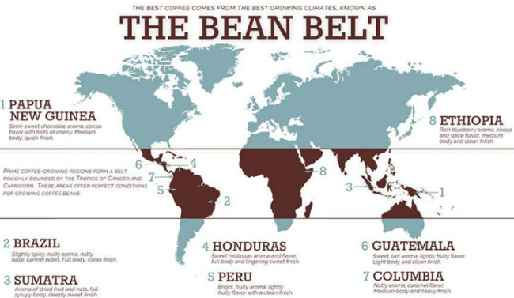

Coffee shops worth visiting

Legend of the coffee tree
There is an interesting legend about the coffee tree as follows. A shepherd boy named Kaldi, while feeding his sheep once, he observed that the sheep eating strange red fruit suddenly jumped with unusual joy. He tasted this strange fruit and suddenly felt extremely refreshed and full of energy. Then he informed the monks. At first they thought it was the forbidden fruit that brought the devil and decided to burn the seed. However, the scent released from the strange seeds when burned made them want to taste it. Indeed, their spirits were extraordinarily refreshing. They decided to make it a drink before each ceremony.
 The origin of the coffee tree
The coffee plant is said to have originated in the distant country of Ethiopia.
However, that is just a legend. In fact, the coffee plant originated in Ethiopia (formerly known as Kaffa). It was slaves captured from Ethiopia to Egypt who brought this fruit with them. They soon became a very popular Egyptian drink.
In the 18th century, the first Dutch people brought coffee outside of Egypt and planted it in Martinique. Later, the French and Brazilians also brought this fruit back to their homeland. That was the first step for coffee trees to be planted all over the world.
The origin of the coffee tree
The coffee plant is said to have originated in the distant country of Ethiopia.
However, that is just a legend. In fact, the coffee plant originated in Ethiopia (formerly known as Kaffa). It was slaves captured from Ethiopia to Egypt who brought this fruit with them. They soon became a very popular Egyptian drink.
In the 18th century, the first Dutch people brought coffee outside of Egypt and planted it in Martinique. Later, the French and Brazilians also brought this fruit back to their homeland. That was the first step for coffee trees to be planted all over the world.
Coffee belt Coffee trees can be grown in many places and areas in the world. However, there are only areas within the coffee belt; where the conditions of soil, altitude, climate and weather are met, new coffee trees grow, develop well and produce quality coffee beans with rich flavor.  coffee belt Coffee trees only grow and develop well when located in the coffee belt. The coffee belt is the area located along the equator, between the 23rd latitude north and the 23rd south latitude. The lands within this boundary combined with an altitude of 500-2,000 meters above sea level, rich soils, hot and humid tropical climate, and suitable rainfall are ideal conditions for coffee trees to grow. and develop.
Coffee flavor The taste of coffee is something very difficult to say, it is based on the perception of many people. Each type of coffee has its own unique flavor and depending on the preferences of each person, making their choice. Arabica has a beautiful brown color, smooth and smooth. When enjoying, a cup of fine Arabica will have a characteristic mild bitter taste, seductive aroma, in addition to a little sour or fruity taste.
Robusta is bitter, not sour like Arabica. We can also combine Arabica and Robusta in certain proportions to make the coffee taste better.
Benefits of coffee
In coffee there is a lot of caffeine which is a substance that has many effects on the body, and at the same time beneficial minerals and compounds also give regular coffee drinkers many benefits. Talking about the beneficial effects of coffee, one can list a series of categories such as: Anti-drowsy, refreshing, more comfortable, preventing cancer, aging, prolonging life, beauty , weight loss,… And many other benefits. benefits of drinking coffee Drinking coffee has many health benefits. However, the above benefits are only obtained when drinking in a moderate amount, averaging 2 cups of coffee a day. If too much coffee is used, it can also cause users to lose sleep, be intoxicated with coffee, hallucinate, coffee addiction, high blood pressure, etc.